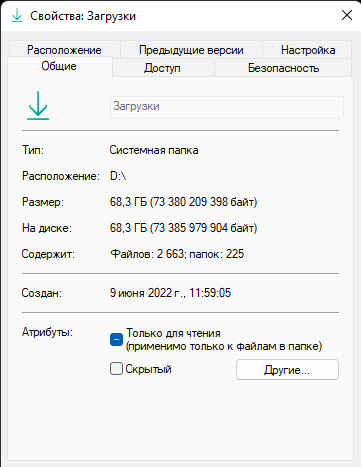
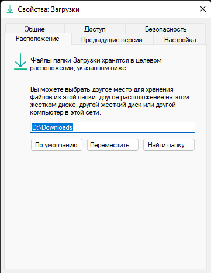
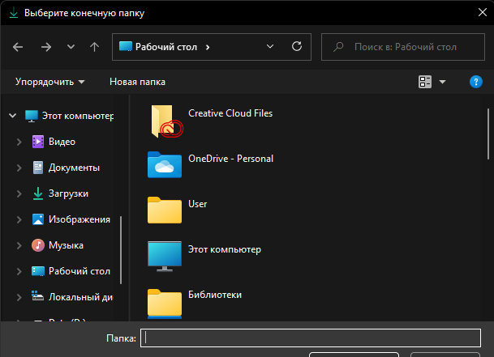

Reccomends
- Если у Вас мало места на диске C: и есть диск D:, у которого ещё много места, то попробуйте перенести папку "Загрузки" на второй диск.
Для этого кликните ПКМ (правая кнопка мыши) и выбирете "Свойства".

Потом зайдите в пункт "Расположение".

Далее нажимаете на "Переместить..."
Потом выбираете нужный диск, нажимаете "Ок" и применяете настройки.

Гайды
Главная
Blender проекты